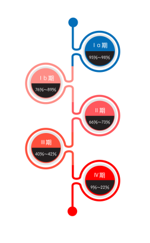

没想到，宫颈癌还有这么多面孔呢！
都说时间是把杀猪刀，历经不同的生长阶段，逆生长的不多，“放飞自我”的倒不少。曾经白衣翩翩的英俊少年如今变成胡子拉碴的邋遢大叔；曾经豆蔻年华的天真少女如今变成了只知柴米油盐的黄脸婆……可你知道吗？宫颈癌也有自己不同的“成长”阶段的！时间这把刀，在宫颈癌身上又留下了怎样的印记？宫颈癌又是如何放飞自我、有着哪些不一样的面孔呢？跟我一起来看看吧！
通常情况下，病人在经过病理检查、被诊断为宫颈癌后，医生会通过各种检查——妇科检查、影像学检查（X线、B超）或内镜检查等来了解肿瘤影响的范围，确定宫颈癌成长到了哪个阶段，以此来为患者提供最佳的治疗方法并评估治愈的几率。
不同阶段的宫颈癌长得也不一样哦，通常，医生所使用的宫颈癌分期为国际妇产科联盟（FIGO）分期，将其分为了4期：
也就是说，当宫颈癌越来越“放飞自我”的时候，它侵犯的器官就会越来越多。当一个人患了宫颈癌以后，她的生存期长短与宫颈癌所处的分期阶段也有着密切的关系。一般而言，分期的数字越小，生存期越长；分期的数字越大，生存期越短。这可不是随便说说的哦，有数据有真相！
据FIGO报道，宫颈癌的临床分期不同，患者的5年生存率也不同。

看完了宫颈癌的不同面孔，姑娘们有没有感到来自宫颈癌深深的恶意……所以呀，一定要提前做好预防工作，千万不能给宫颈癌“放飞自我”的机会哦~
Ref
1. 刘继红 主编。远离宫颈癌。北京：人民卫生出版社，2008
2. Quinn MA, Benedet JL, Odicino F, et al. Carcinoma of the cervix uteri. FIGO 26th Annual Report on the Results of Treatment in Gynecological Cancer. Int J Gynaecol Obstet. 2006 Nov;95 Suppl 1:S43-103.